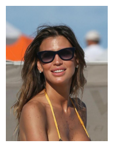
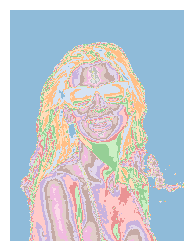
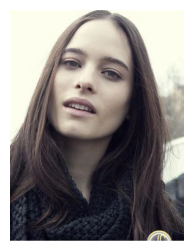
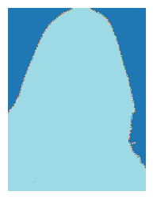
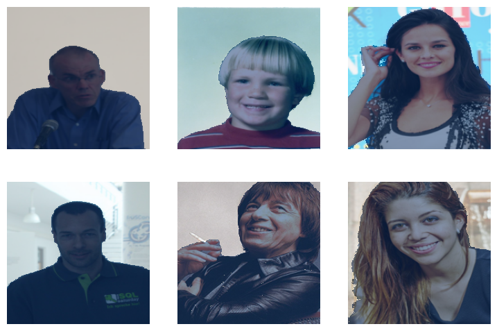
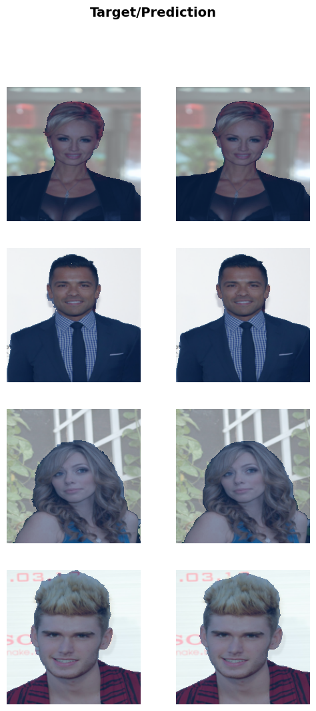

from fastai.vision.all import *
assert torch.cuda.is_available()Binary Image Segmentation (Beginner)
Introduction
This tutorial covers binary image segmentation with fastai. It is my self-assigned homework following Practical Deep Learning for Coders 2022 lesson 1.
Importing the Library and checking the dataset
The dataset chosen for the task was the AISegment.com Matting Human Datasets due to its availability at Kaggle. I downloaded locally with Kaggle cli.
path = Path("/run/media/fredguth/datasets/binary-image-segmentation")!ls $pathaisegmentcom-matting-human-datasets.zip clip_img matting matting_human_halfThe path contains a folder for the input image (clip_img) and another for the mattings (matting). Inside this folders, there are other folders and finally a file. The leaf file in the clip_img subfolder has a correspondent one in the matting folder.
As fastai get_image_file does not guarantee the order, we will need to sort them to garantee the correspondence.
mattings = get_image_files(path/'matting').sorted()
images = get_image_files(path/'clip_img').sorted()
len(images)34426The dataset consist of 34426 images and their correspondent mattings.
Opening image files
fastai uses Pillow to create images:
img = PILImage.create(images[144])
mat = PILMask.create(mattings[144])
img.show(figsize=(3,3))
mat.show(figsize=(3,3))<AxesSubplot: >

Now, we will create a function to return a mask of codes, in the way MaskBlock expects.
codes = np.array(['bg', 'fg'])
def get_msk(fn):
p = Path(str(fn).replace('clip', 'matting').replace('matting_img', 'matting').replace('.jpg', '.png'))
msk = (tensor(PILImageBW.create(p))>0)*1
msk = msk.to(torch.uint8)
return PILMask.create(msk)
f = images[4]
m = get_msk(f)
PILImage.create(f).show(figsize=(3,3))
PILMask.create(m).show(figsize=(3,3), alpha=1)<AxesSubplot: >

Now that we know the expected input and output of our model, let’s build it!
Training our model
To train a model, we’ll need DataLoaders, which is an object that contains a training set (the images used to create a model) and a validation set (the images used to check the accuracy of a model – not used during training). In fastai we can create that easily using a DataBlock, and view sample images from it:
dls = DataBlock(blocks=(ImageBlock, MaskBlock(codes)),
get_items=get_image_files,
splitter=RandomSplitter(valid_pct=0.2, seed=42),
get_y=get_msk,
item_tfms=[Resize(192, method='squish')],
batch_tfms=[Normalize.from_stats(*imagenet_stats)]).dataloaders(path/'clip_img', bs=8)
dls.vocabs = codes
name2id = {v:k for k,v in enumerate(codes)}
dls.show_batch(cmap='Blues', vmin=0, vmax=1, max_n=6)
Here what each of the DataBlock parameters means:
blocks=(ImageBlock, MaskBlock),The inputs to our model are images, and the outputs are Masks (a tensor of label codes).
get_items=get_image_files, To find all the inputs to our model, run the get_image_files function (which returns a list of all image files in a path).
splitter=RandomSplitter(valid_pct=0.2, seed=42),Split the data into training and validation sets randomly, using 20% of the data for the validation set.
get_y=get_mask,The labels (y values) is obtained from the input filename by running the function get_mask.
item_tfms=[Resize(192, method='squish')]Before training, resize each image to 192x192 pixels by “squishing” it (as opposed to cropping it).
batch_tfms=[Normalize.from_stats(*imagenet_stats)]Apply this list of transforms to each batch. In this case, Normalize uses statistics from the imagenet dataset to normalize the data using imagenet as the sample. Normalization will try to distinguish values as much as possible, taking into account their occurrences in the sample.
learn = unet_learner(dls, resnet34)
learn.fine_tune(3)/home/fredguth/Downloads/.anaconda3/envs/py39/lib/python3.9/site-packages/torchvision/models/_utils.py:208: UserWarning: The parameter 'pretrained' is deprecated since 0.13 and will be removed in 0.15, please use 'weights' instead.
warnings.warn(
/home/fredguth/Downloads/.anaconda3/envs/py39/lib/python3.9/site-packages/torchvision/models/_utils.py:223: UserWarning: Arguments other than a weight enum or `None` for 'weights' are deprecated since 0.13 and will be removed in 0.15. The current behavior is equivalent to passing `weights=ResNet34_Weights.IMAGENET1K_V1`. You can also use `weights=ResNet34_Weights.DEFAULT` to get the most up-to-date weights.
warnings.warn(msg)| epoch | train_loss | valid_loss | time |
|---|---|---|---|
| 0 | 0.082208 | 0.065039 | 19:28 |
| epoch | train_loss | valid_loss | time |
|---|---|---|---|
| 0 | 0.058268 | 0.059941 | 22:25 |
| 1 | 0.040470 | 0.057517 | 20:34 |
| 2 | 0.055856 | 0.054101 | 18:39 |
Now, we can export the model for later use:
learn.export('bImgSeg.pkl')Let’s see the results of this model:
learn.show_results(cmap='Blues', vmin=0, vmax=1, max_n=4)